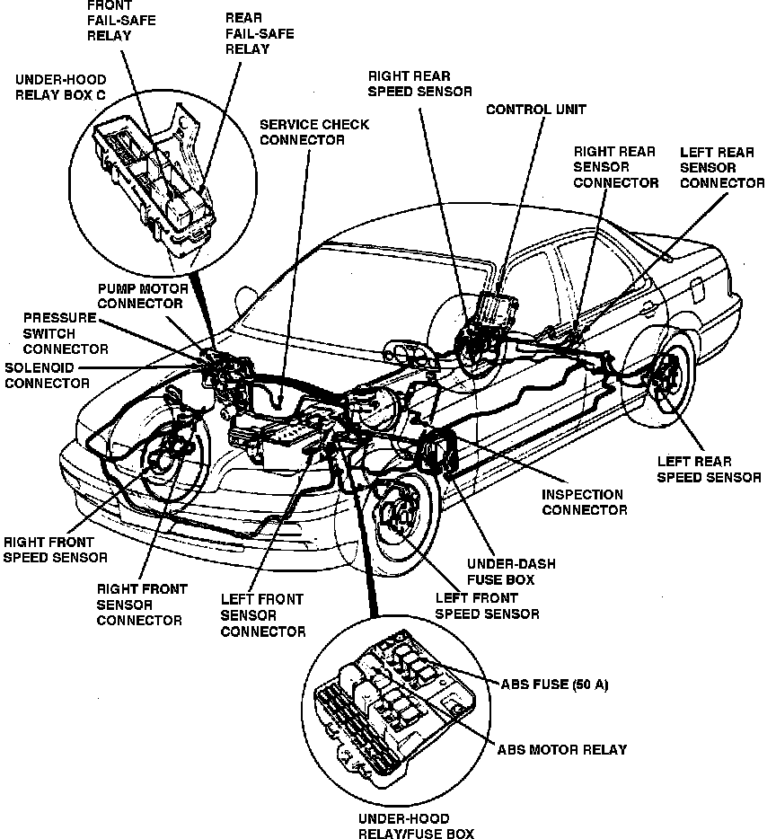

Operation CHARM
: Car repair manuals for everyone.
Home
>>
Acura
>>
1991
>>
Legend Sedan V6-3206cc 3.2L SOHC FI
>>
Repair and Diagnosis
>>
Brakes and Traction Control
>>
Antilock Brakes / Traction Control Systems
>>
Brake Fluid Pump Relay
>>
Locations
Brake Fluid Pump Relay: Locations
Engine Compartment Relays & Control Units:
ABS System Components:

On Underhood Fuse/relay Box